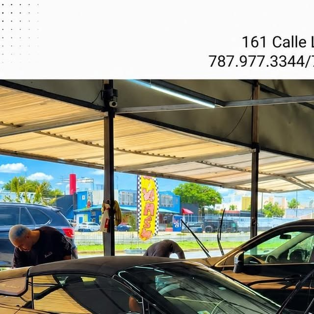

HAND CAR WASH & DETAILING PR
El brillo clásico de San Juan desde el 2005: lavado a mano, pulido y detailing de lujo para tu auto.
Galería
Fotos reales de autos que han pasado por nuestras manos. Toca las flechas o desliza.
Lo que hacemos
Detailing de lujo hecho a mano en la Calle Las Flores, San Juan. McLarens, Ferraris, Porsches y tu carro: todos reciben el mismo cuidado.
Devuelve brillo, profundidad y un acabado espejo a la pintura de tu auto.
Capa sellante que protege el brillo del pulido y mantiene el acabado por más tiempo.
Limpieza profunda de asientos, alfombras e interior. Huele y se siente nuevo.
Devuélvele la claridad a tus focos opacos con pulido profesional.
Instalación de tintes para tu auto, con el acabado limpio que nos caracteriza.
Lavado exterior e interior completamente a mano. Cero máquinas, todo detalle.

Quiénes somos
Auto Salon Hand Car Wash & Detailing PR: empresa puertorriqueña desde 2005 en la 161 Calle Las Flores, San Juan, dirigida por su dueño Jorge Perez.
Lavado a mano, pulido y sellado de pintura, shampoo de interiores, restauración de focos y tintes. Más de 20 años dejando impecable todo auto, desde el daily driver hasta el McLaren.
Hablar con nosotrosPreguntas frecuentes
Estamos en 161 Calle Las Flores, San Juan, Puerto Rico.
Es un servicio que devuelve la claridad a los focos opacos o amarillentos mediante pulido profesional, mejorando la apariencia del auto y la iluminación.
Después del pulido, se aplica una capa sellante sobre la pintura para proteger el brillo y mantener el acabado por más tiempo.
Sí, ofrecemos instalación de tintes para tu auto.
Todo a mano. Somos un hand car wash: lavado exterior e interior hecho a mano con atención al detalle.
Llámanos al 787-977-3344 o escríbenos por WhatsApp al mismo número y coordinamos tu visita.
Pasa por el letrero
Esta página la creó ManuPro. Escríbenos hoy mismo y cotiza la website profesional de tu negocio.
Cotizar por WhatsApp